Rental management is a digital file for every apartment you rent out in Israel: the building and its apartments, the tenants and the lease, rent and cheques, repairs and documents. Everything in one place, in English or Hebrew, on a computer or a phone.
Underneath there are three buttons: New property starts your first building, Import from Excel brings in many apartments at once (chapter 2), and Look at a sample file first opens a ready-made file to try things out.
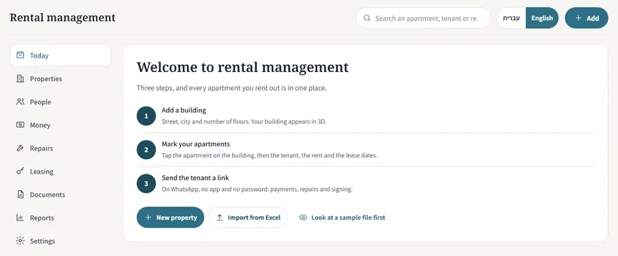
Want a feel for it before you enter anything? Tap Look at a sample file first. A landlord's file opens with three buildings and five apartments: a tenant who is late, cheques to deposit, an urgent repair, and a vacant apartment with applicants. At the top you will see Sample data: tap and change anything, nothing is sent and nothing is saved. When you are done, tap Back to my data.
This screen opens every time you sign in. Four numbers at the top: Collected this month out of what is expected, the Open balance of all your tenants, Vacant apartments and Open repairs. Below them, Needs your attention (chapter 4), and next to it This month, apartment by apartment, each apartment in its colour: green is paid, amber is not paid yet, red is late, grey is vacant.
The menu: Today, Properties, People, Money and Repairs. On a phone, More also holds Leasing, Documents, Reports, Settings and Guide. This guide lives there, inside rental management, in the language you work in. The top bar has a search for an apartment, tenant or repair, a switch between English and Hebrew, and an Add button for anything new.
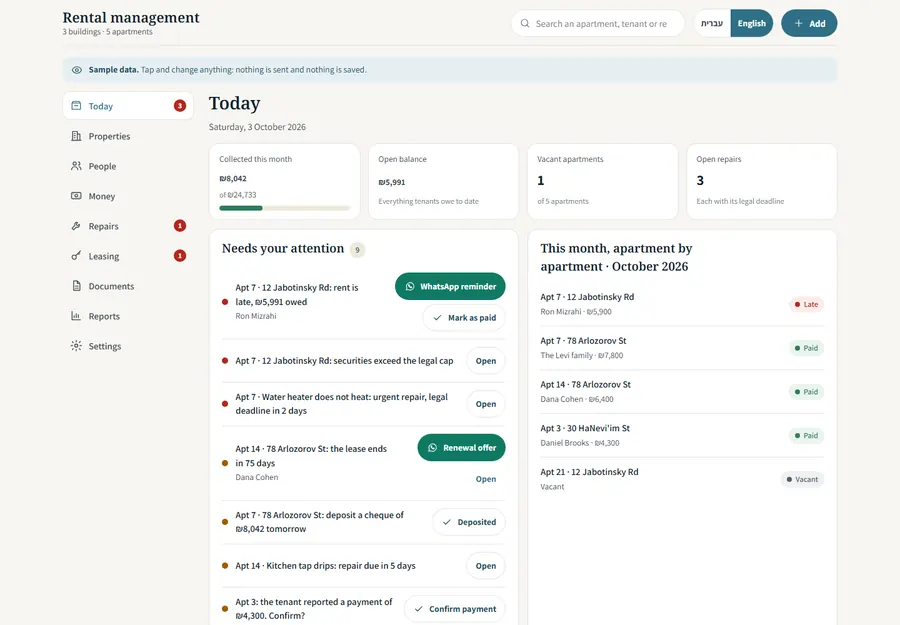
Before your first tenant, open Settings and fill in:
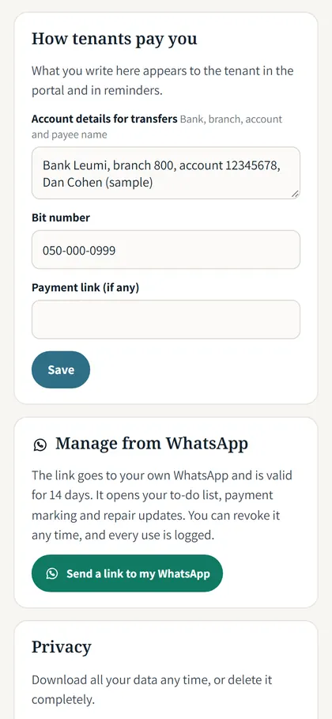
The building page has two parts that work together: the building in 3D, and next to it the Floors, one row per floor. A coloured apartment is yours. A dashed square is an apartment you have not marked yet: tap it to add a new apartment on the right floor and in the right position. You can also tap an apartment on the building itself.
In the apartment form, fill in Apartment name (for example Apt 7), Floor, Position on the floor, Rooms, Size (m²) and Facing. For the position, 0 is the first apartment to the right of the entrance. For a vacant apartment, add the Asking rent and Available from as well.
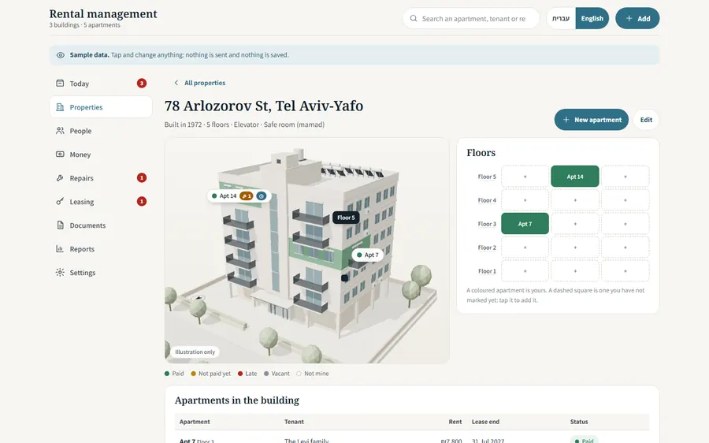
Each apartment on the building also carries a mark when it has an open repair, or when its lease ends within 90 days. Tapping a floor's name, in the floors list or on the corner of the building, highlights the floor and opens a card for that floor: the apartments on that floor with tenant, rent and debt, the floor's total rent and open debt, and its open repairs. Every line opens the apartment or the repair. Back to the whole building closes the card.
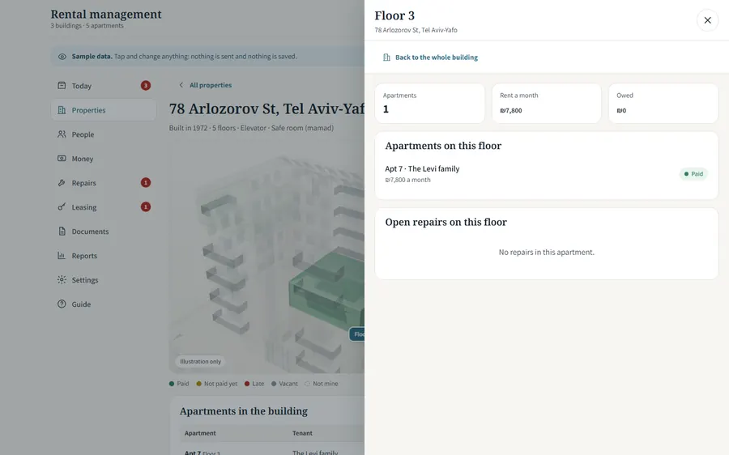
Further down the building page: Apartments in the building as a table, Building expenses, and the building's Documents, such as the insurance policy or the land registry extract.
Tapping an apartment anywhere in the system opens its card. At the top, the action buttons: WhatsApp reminder, Mark as paid, New repair and Tenant link. Below them, the tabs: Overview, Lease, Payments, Repairs, Documents, Journal and The apartment.
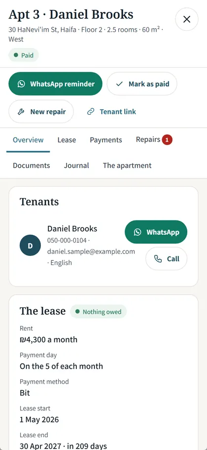
The journal records everything that happened: messages sent, messages from the tenant, a signature, a new document. You can add your own Journal entry: a note, a phone call, a meeting or a message you received.
Already keep a spreadsheet of your apartments? No need to type it all again.
Column names are recognised automatically, in English or Hebrew. The header only has to be one of these, or start with one of them:
| Column | English headers recognised |
|---|---|
| Address (required) | address, street |
| City (required) | city, town |
| Apartment | apartment, apt, unit |
| Floor | floor |
| Rooms | rooms |
| Tenant | tenant, tenant name |
| Phone | phone, mobile |
| Rent | rent, monthly rent |
| Lease start | start, lease start |
| Lease end | end, lease end |
| Payment day | pay day |
The same columns are recognised by their usual Hebrew headers too, so a sheet kept in Hebrew imports as it is. Capital letters do not matter.
What the import does:
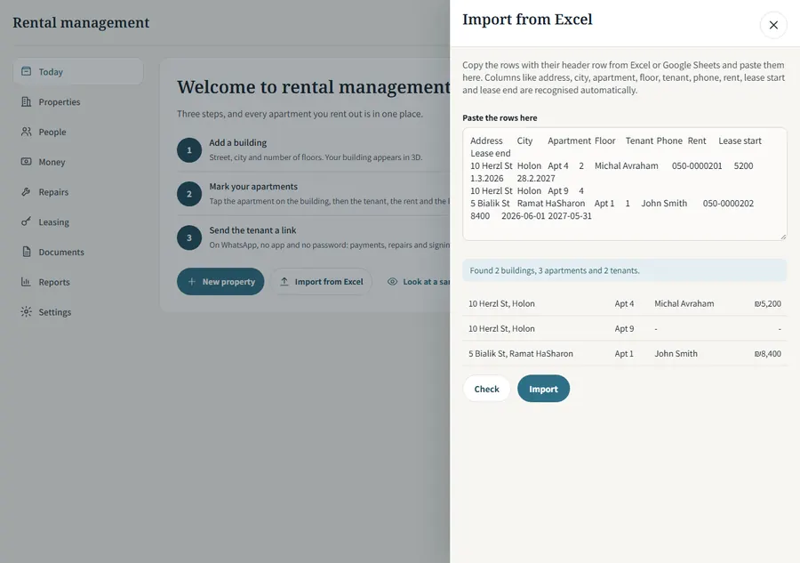
Most landlords join in the middle of a lease. So that no old debts are invented, there is a special field. The Excel import does this by itself. When the lease form gets a start date before the current month, the field Follow payments from appears, already set to the 1st of this month. Rent is recorded from that date on; anything before it is not counted.
If the tenant really does owe something from before, record that debt separately as a Charge (chapter 4).
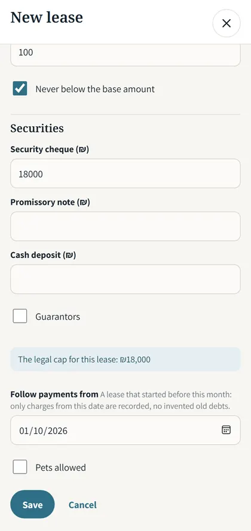
From then on the system records the rent every month by itself, on the payment day, in advance for the month, as is usual in Israel. The first charge is never earlier than the lease start.
Under Linkage, choose Linked to the Consumer Price Index, then:
The base index is the one of the lease start date. At every update the system calculates the change by the known index, straight from the Central Bureau of Statistics (CBS) calculator, and adjusts the charge by itself. On the apartment card's Lease tab, Check the linkage now shows what the updated rent would be today.
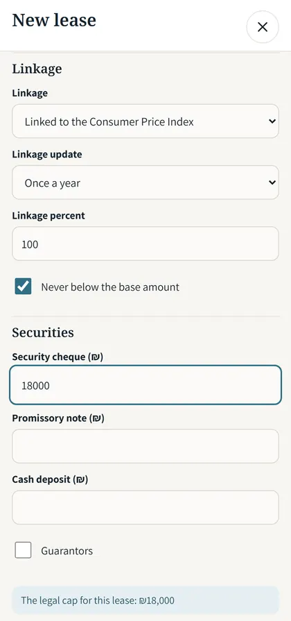
Under Securities, fill in the Security cheque, Promissory note and Cash deposit, and tick Guarantors if there are any. While you type, a line shows the legal cap for this lease. If the security cheque and the cash deposit together go over it, the line turns into a warning, and the lease also appears on your to-do list.
On the Lease tab, tap Printable lease. A Residential Lease Agreement (unprotected tenancy) opens, built from your details: the parties, the apartment, the term, the rent, the linkage, the securities, the option and pets. A clause that does not apply to your lease is left out. The lease opens in the tenant's language; the English translation states that the Hebrew text governs.
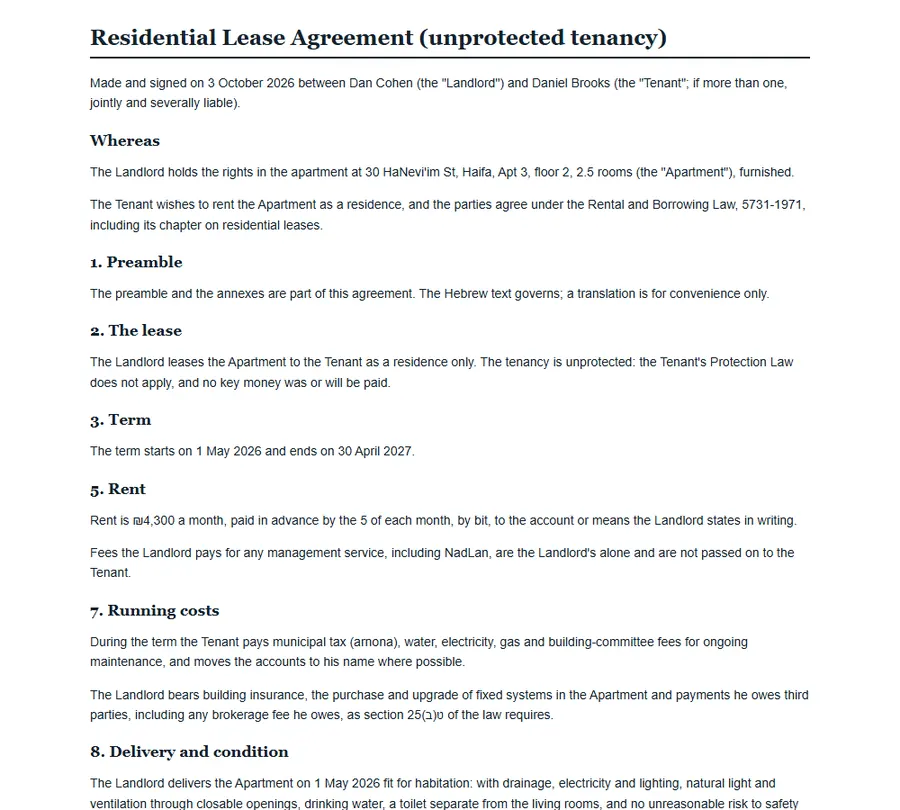
On the Lease tab, in the Signature card, tap Send for signature. A ready WhatsApp message to the tenant opens, in their language, with a personal link valid for 14 days. The tenant:
The signature is kept with the exact text that was signed (with a digital fingerprint of the text), the date and time, and the link it came through. The apartment card then shows Signed, with the name and the time. A lease that was sent but is not signed yet appears on your to-do list with Resend for signature.
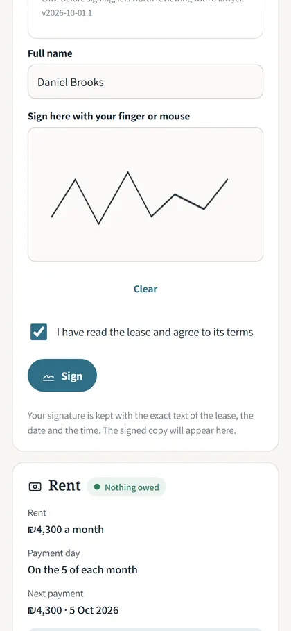
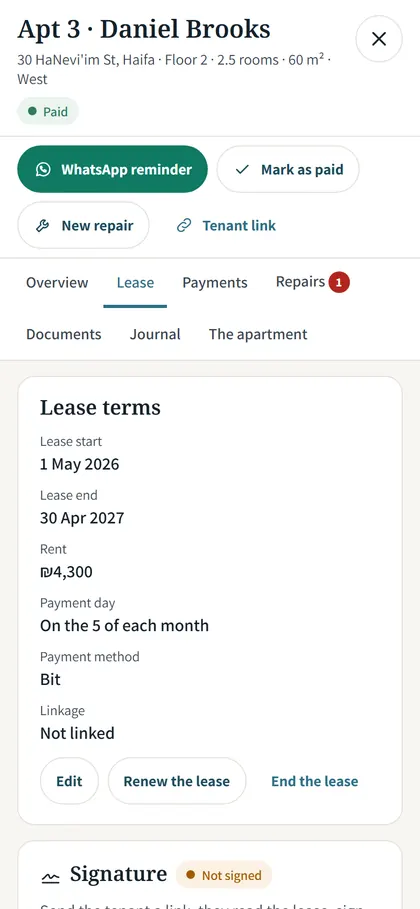
On the apartment card, tap Tenant link. A WhatsApp message in the tenant's language opens, with a personal link. Your tenant installs nothing and needs no password: they open the link from WhatsApp and see one page with everything:
The link is valid until the end of the lease plus 60 days, the time in which the deposit is returned. No phone number for the tenant? A Your link is ready window opens so you can copy the link or share it on WhatsApp.
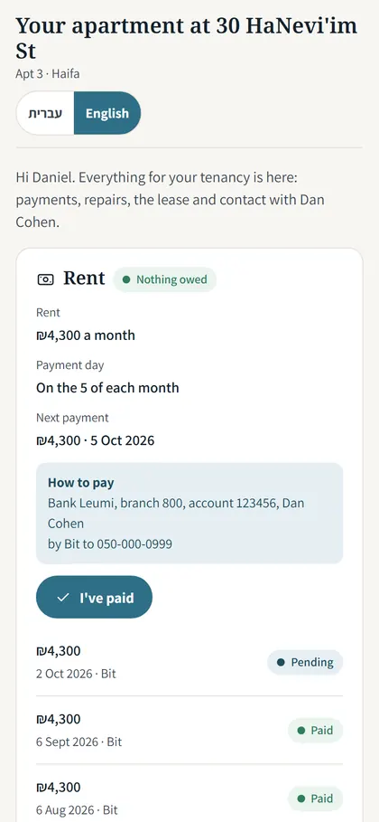
To share a document with the tenant (the signed lease, say, or the move-in report), upload it to the apartment's Documents tab and tap Share with the tenant. You can undo it any time with Stop sharing. Every file is stored encrypted, up to 15 MB.
The People screen lists every contact by type: Tenants, Applicants, Guarantors and Professionals. Each contact has a Language, and messages to them are written in it. The ID or passport number is optional and stored encrypted. Next to any tenant who owes money, the amount is shown.
Every active lease gets a rent charge each month, on its payment day, in advance for the month. A payment you record closes the oldest debt first, then the next one. So it is always clear which month is open.
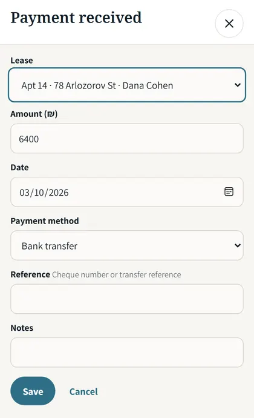
The apartment's Payments tab also has Payment confirmation: a printable note in which you confirm to the tenant that you received the latest payment. It comes from you as the landlord and is not a tax receipt.
On their personal page the tenant taps I've paid and fills in the amount, date, method and reference. The report does not count as a payment until you confirm it. Your to-do list shows "the tenant reported a payment of... Confirm?". Check that the money arrived, then tap Confirm payment.
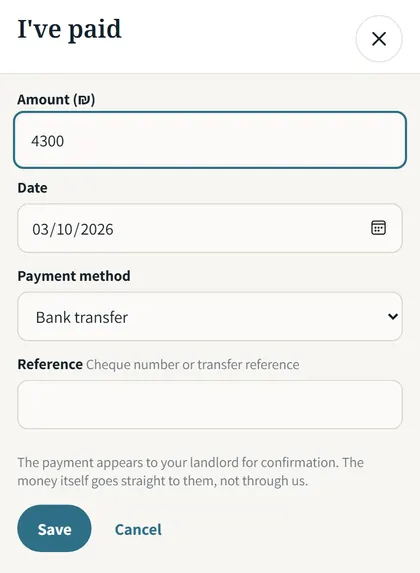
Got cheques for the whole year? Record each one as a Payment received with the method Cheque, the date written on it, and the cheque number as the reference. A cheque dated in the future is kept as Pending and does not count until it is deposited.
On the Money screen, the Cheques tab lists every cheque you hold by date. Two days before a cheque's date, a reminder to deposit it appears on your to-do list. After depositing, tap Deposited.
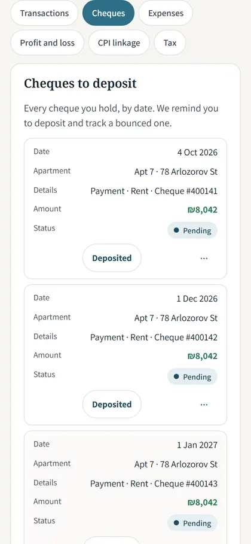
Every line in the books has a ⋯ button, Line actions. For a cheque that came back, choose Cheque bounced. The payment no longer counts and the month is open again. You may fill in a Bank fee to charge the tenant, which is recorded as a separate charge.
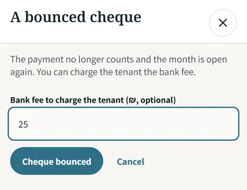
A line in the books is never deleted. Entered a wrong amount? Under ⋯ choose Void this line and write the Reason. The line stays, marked Cancelled with the reason, and then you record the right one. Your books stay clean for any review and for your accountant.
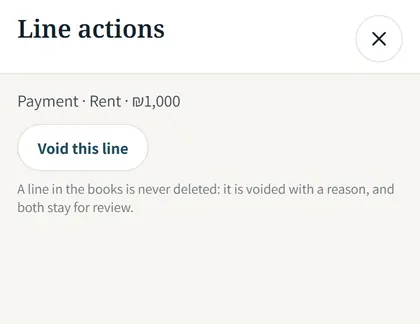
Needs your attention builds itself from your data, most important first: debt, legal deadlines, repairs. What can appear on it:
Next to each item is the button that solves it: reminder, mark as paid, renewal offer, deposited, confirm. Eight items are shown; Show all opens the rest.
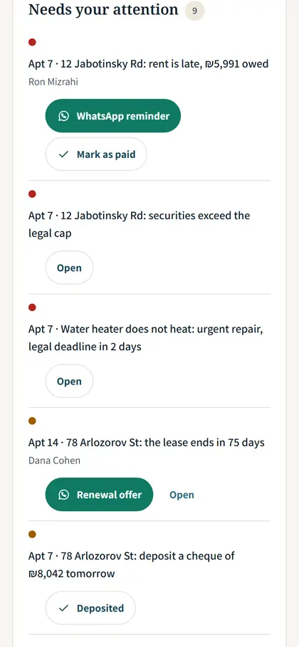
Tap WhatsApp reminder, on the to-do list or the apartment card. A friendly message opens, ready, in the tenant's language: the amount, the month, and how to pay you (Bit, bank account or link, from your settings). You can edit the text. Send on WhatsApp opens your own WhatsApp with the message, and you press send. You can also Copy it.
The message leaves from your phone and is logged in the journal. The system never sends messages by itself or in your name.
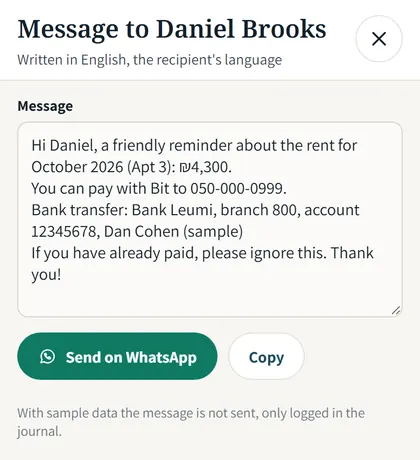
On Today or in Settings, tap Send a link to my WhatsApp (your number must be in Settings first). You receive a personal link valid for 14 days. It opens your to-do list on the phone with no password: mark rent as paid, confirm a tenant's report, send a reminder, move a repair to In progress or Done, and add an expense. Reports, documents and settings stay in your full account.
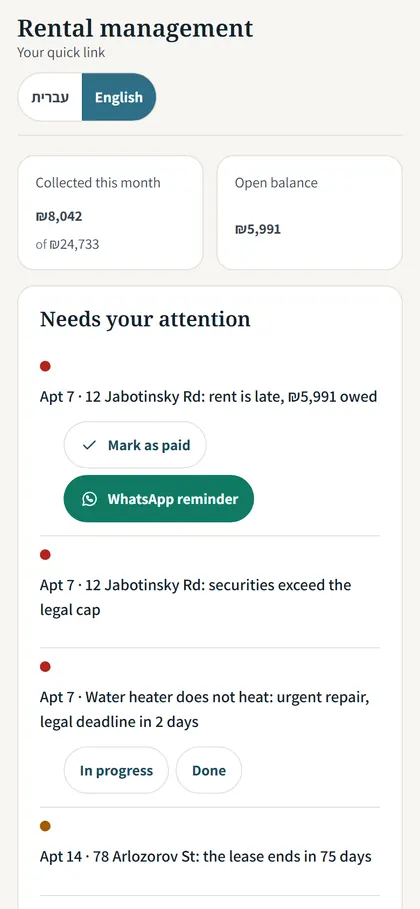
On the Money screen, move between months with the arrows and see Expected this month, Collected, Expenses and Net. The tabs: Transactions, Cheques, Expenses, Profit and loss for the last 12 months by property, CPI linkage and Tax.
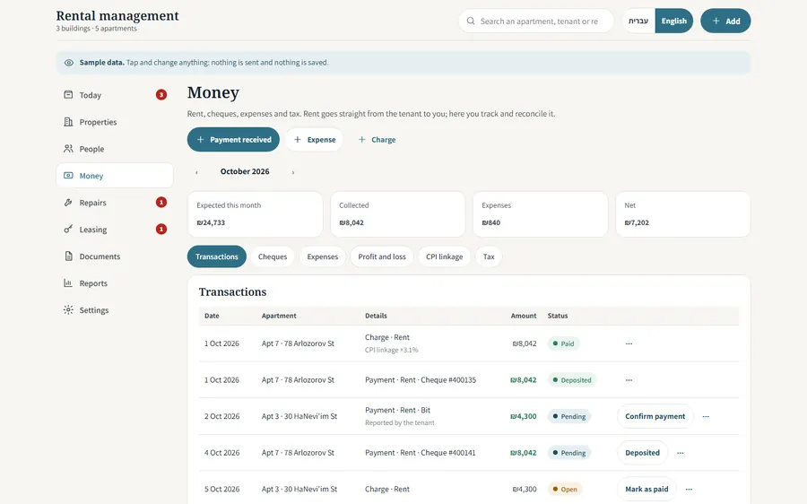
The Reports screen has four reports:
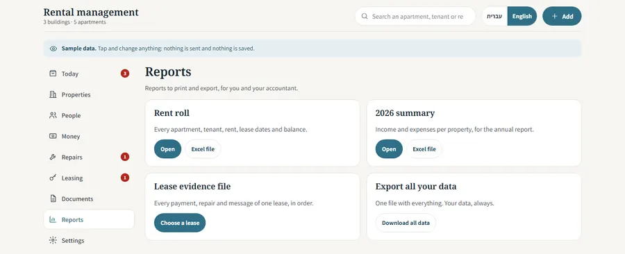
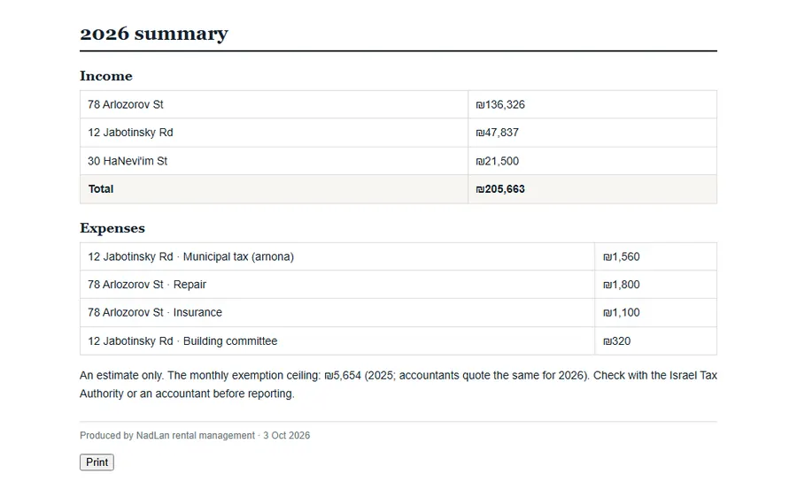
Report totals are based on money actually collected. A deposit received is not income, and a debt written off is not income.
On their personal page the tenant taps Report a repair, says in one sentence what happened, and adds details and a photo from the camera. Under Can you live in the apartment as usual? they mark whether it is urgent, or leave Not sure. The window also carries an emergency note: a gas smell, sparks or a structural crack means leaving the apartment and calling emergency services. The photo is made smaller before it is sent, so it uploads quickly even on a weak signal.
The repair appears on your Repairs screen under New, and on your to-do list. The tenant sees the repair and the date by which it should be fixed.
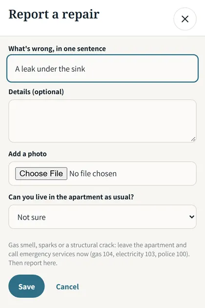
On the apartment card, or through Add, tap New repair and write What's wrong, in one sentence. As you type, a line appears such as "Recognised from the description: Water heater · Urgent · up to 3 days to fix". In Urgency you can leave Recognise from the description, or choose Urgent or Standard yourself.
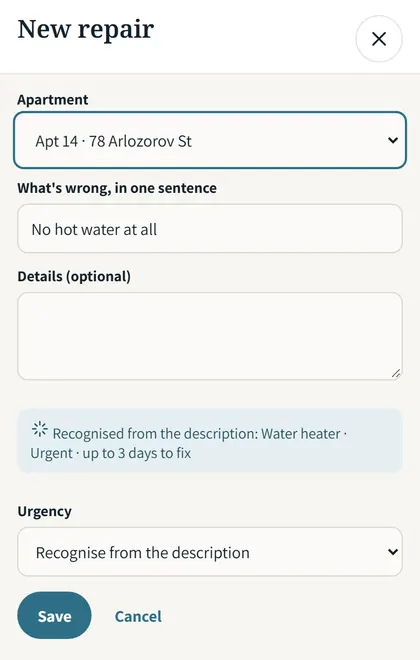
Tapping a repair opens its card. At the top, the stages: New, Visit booked, In progress, Waiting, Done. From the repair's type the system suggests which professional fits, with a link to Professionals nearby.
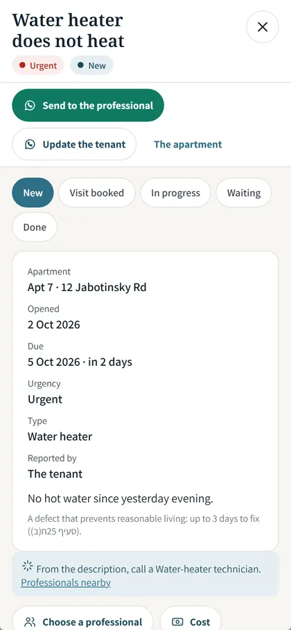
The professional opens the link with no password and sees this one repair only: the address, urgency, type and deadline. From there they can message you on WhatsApp and send an Update the status: visit booked, in progress, waiting or done, with details, a cost and a photo. The update goes into the repair and its journal.
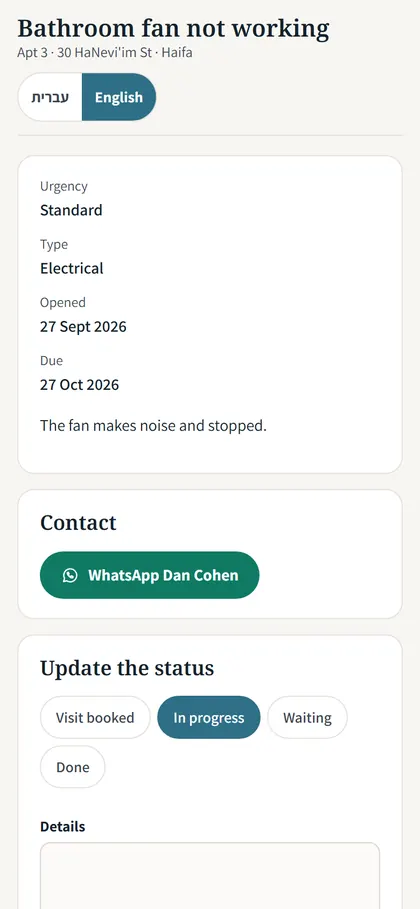
The Repairs screen shows every repair by stage, each with its deadline; a repair past its deadline is marked in red. On the repair card, Cost keeps what it cost. When you move a repair with a cost to Done, the system asks whether to record the cost as an expense, so it reaches your profit and loss.
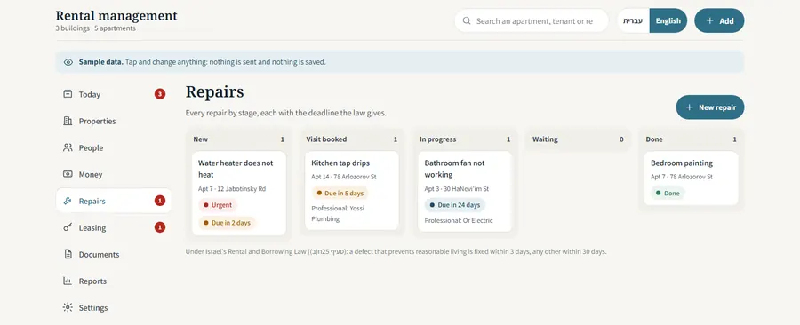
On the apartment card's The apartment tab: Apartment details, a drawing of the apartment Inside the apartment with points for its appliances, and Systems and appliances. Tap Appliance or system to add a water heater, A/C, electric panel, meter, fridge, oven, washing machine and more, with brand, model, installation month, Warranty until and Last service. Each appliance shows whether it is Under warranty or the Warranty ended. Report a fault opens a new repair named after the appliance. While that repair is open, the appliance is marked on the drawing, and tapping it opens the repair.
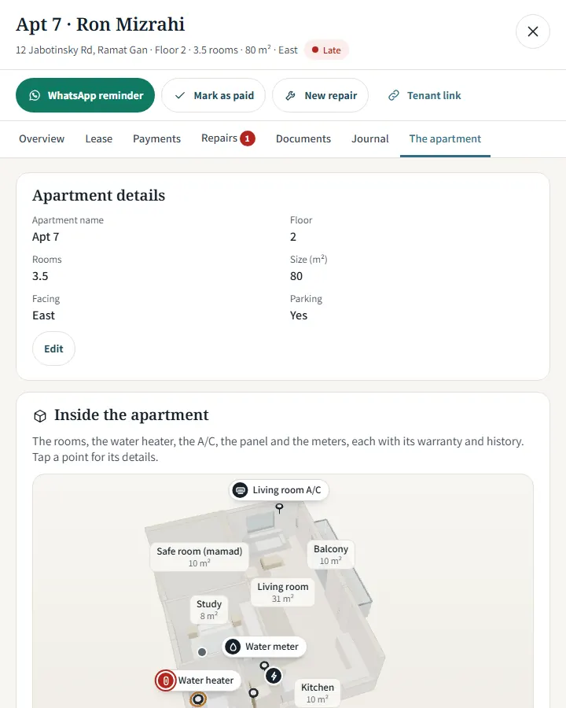
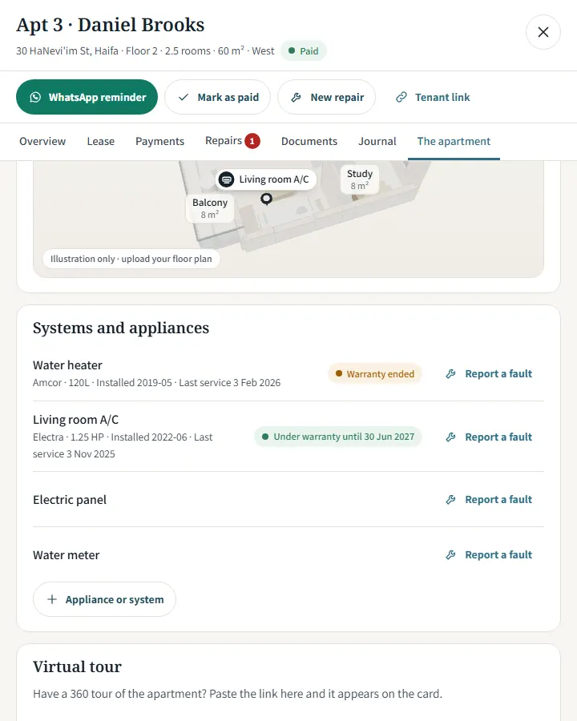
A rented apartment goes through tenants, renewals, index updates and tax years. This chapter walks you through all of it.
On the Lease tab, the Deadlines card lists the dates that matter, in order:
Ninety days before the end, the lease appears on your to-do list with a Renewal offer: a ready WhatsApp message to the tenant. Once you agree, tap Renew the lease on the Lease tab and fill in Lease start (already set to the day after the current end), Lease end and Rent.
What happens: the current lease closes the day before the new term. Tenants, guarantors and securities move to the new lease. A cash deposit moves with the tenant, in two visible lines: returned on the old lease, received on the new one. With CPI linkage, the new base index is the one of the new start date. Send the new lease for signature again.
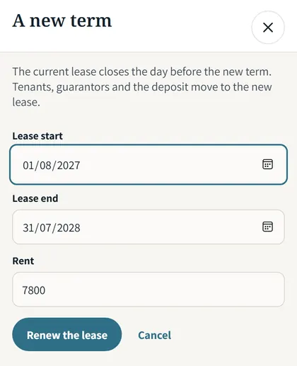
On the Lease tab, tap End the lease and fill in:
Rent stops on the day the apartment is returned. Charges for months after that date are voided, and the last month is counted by days. For example, in a lease that starts on the 1st, a tenant who leaves on the 10th of a 30-day month pays a third of that month. Untick the box and the last month stays whole. If the tenant stays on after the lease end, the extra months are charged at the same rent. Any debt left stays in the books and on the to-do list until it is closed. And from that same day, the 60-day count to return the deposit starts.
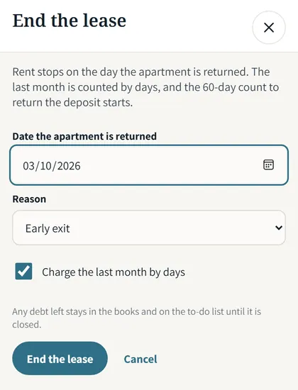
The apartment's Payments tab has a Deposit card: Held now, the Legal cap, and after the end also Return by. Three buttons:
From the day the apartment is returned, the return is on your to-do list: "return a deposit of... by...". In its last two weeks it moves up the list, and once the date has passed it reads "the legal deadline to return the deposit has passed".
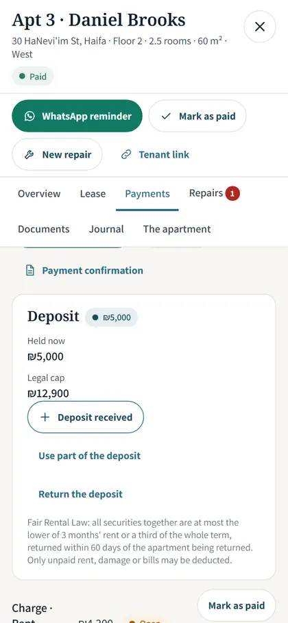
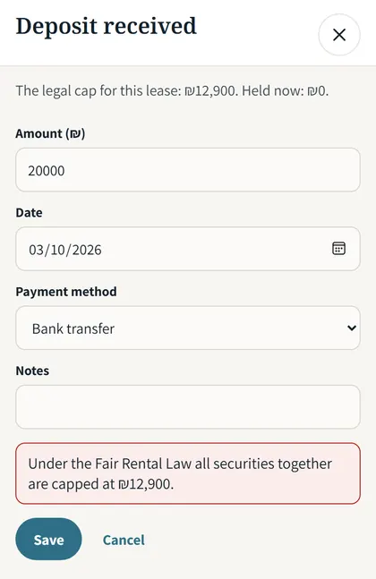
A debt does not disappear when the lease ends. On the apartment card's Overview tab, Former tenants, open matters shows the debt, the credit or the deposit still held, with a Payments button that opens the old lease's books. The debt is also on your to-do list: "a former tenant still owes...".
How a former tenant's debt is closed:
The other way round: if the tenant paid more than was charged, a Tenant's credit appears, and the to-do list says "a former tenant is owed a refund". Refund the tenant records the refund, up to the credit.
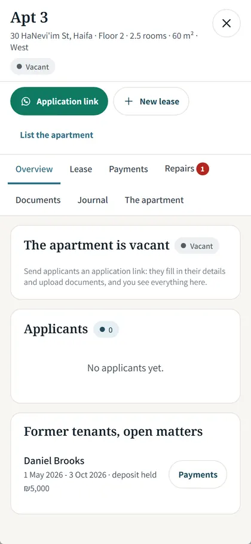
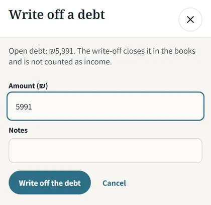
When a lease ends in eviction, choose Eviction as the reason when you end the lease. The legal process itself goes through a lawyer and the court, not through the system. What the system gives you is the Lease evidence file on the Reports screen: every payment, repair and message of the lease, in order. It is a summary of what was recorded, not a legal document, but it saves your lawyer a lot of work.
An apartment has become vacant? On its card, or on the Leasing screen, tap Application link and send it to people who are interested. The link is valid for 30 days. The applicant sees the apartment's details, fills in name, phone, who will live there and the move-in date, reads and accepts the privacy notice, and can upload payslips, a bank statement or an ID. Every file is stored encrypted.
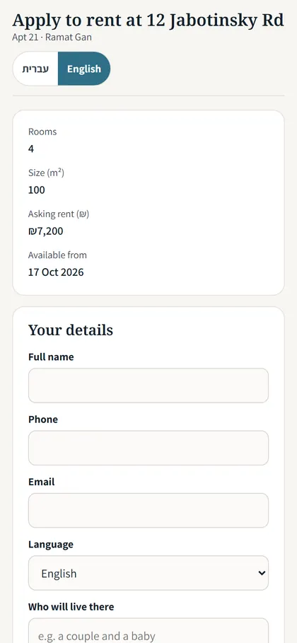
The application appears on your to-do list, and on the Leasing screen under Applicants by stage: New, Contacted, Viewing, Applied, Approved, Signed. On the applicant's card, in the Applicant file, move them between stages, read How to check a tenant, and when you decide, tap Lease with and their name. The applicant becomes your tenant.
List the apartment takes you to the site's form for publishing a listing. Want help finding a tenant? A licensed broker from the site's brokers list does it under a signed brokerage order.
With a linked lease there is nothing to remember: at every update the monthly charge is already calculated by the index. And if the Central Bureau of Statistics site is down on the day a charge is recorded? The charge is recorded at the base amount and marked as waiting for the index. Your to-do list says "charges are waiting for the CBS index. The difference will be recorded automatically when it arrives". When the figure arrives, the exact difference is recorded by itself as a separate charge, with the same date.
On the Money screen, the CPI linkage tab has a calculator: amount, from date, to date, and Calculate. Below it, CPI-linked leases, each with its next update date and Check the linkage now. The wording of the lease governs.
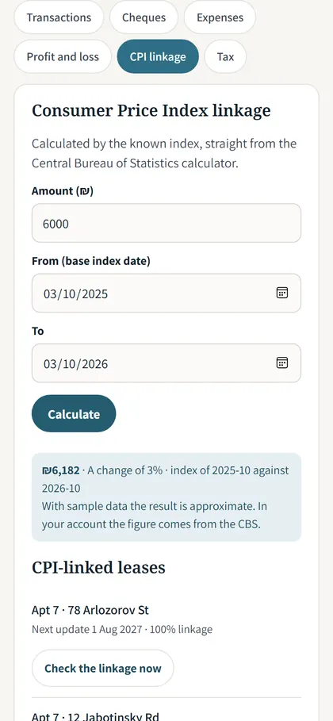
At the end of a year:
Your data, always. At any time, on the Reports screen or in Settings, tap Download all data and get one file with everything: properties, apartments, people, leases, every line of the books since the start, repairs, the journal and the list of documents. The files themselves are downloaded from each document. For work in Excel, every report has an Excel file.
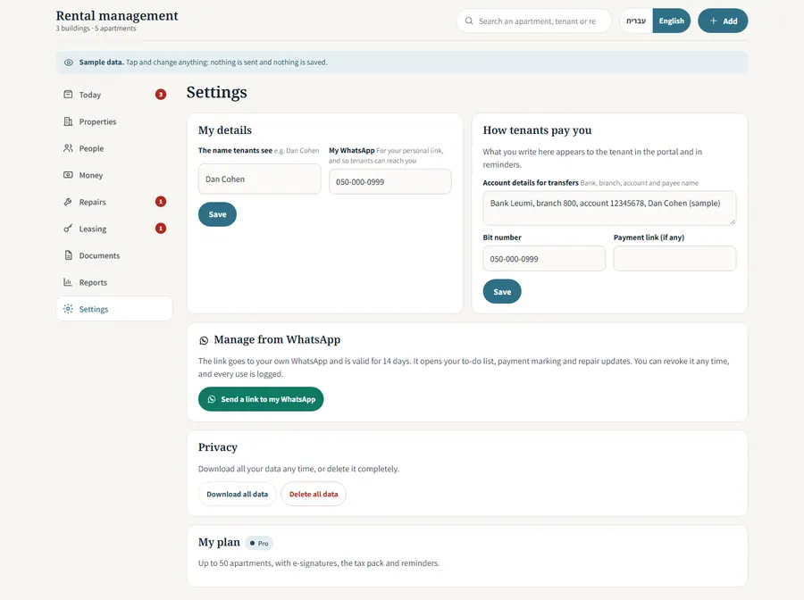
In Settings, under My plan, you see your plan: Free, Pro or Business. The free plan suits a small number of apartments; Pro and Business are for larger portfolios and management companies. Prices and terms will appear here once they are published.
No. Your tenant pays you directly, by transfer, standing order, Bit or cheques. The system records, reminds and reconciles. The tenant can report "I've paid" from their link, and you confirm it.
Yes. Every tenant has a language. Their personal page, the lease translation and every WhatsApp message to them are in their language, while you work in yours. In the lease, the Hebrew text governs.
A lease may be signed electronically. The signature is kept with the exact text signed, its date and its time. For a complex deal, have a lawyer go over the lease.
Each cheque as a Payment received with the method Cheque and the date written on it. The cheques wait on the Cheques tab, and you are reminded to deposit each one. A cheque that comes back is marked with Cheque bounced, with the bank fee.
By the known index, from the Central Bureau of Statistics calculator, from the lease start to the update date, at the linkage percent you set. If you ticked Never below the base amount, a fall in the index never lowers the rent.
By law, all securities together are capped at the lower of three months' rent or one third of the rent for the whole term. The lease form shows the exact cap for your lease, and warns you if you go over it.
Edit the lease and check Follow payments from. Charges already recorded before that date can be voided with ⋯ and Void this line, with a reason. With the New lease form and with the Excel import, the field fills itself with the 1st of the current month.
In End the lease, enter the date the apartment is returned and keep Charge the last month by days ticked. The last month is counted by the days the tenant was in the apartment, and later charges are voided.
The Tax tab estimates the exemption and the 10% route, and the Reports screen has the yearly summary and an Excel file for your accountant. It is an estimate only; the report itself goes to the Israel Tax Authority, or through your accountant.
Only you. Personal details and files are stored encrypted. At any time you can download all your data in one file, or delete everything. If a paid plan ends, nothing is deleted.